本文讨论的是在 Windows 环境下，安装使用 Hexo 博客。
# 什么是 Hexo
Hexo 是一个快速、简洁且高效的博客框架。Hexo 使用 Markdown（或其他渲染引擎）解析文章，在几秒内，即可利用靓丽的主题生成静态网页。
# Hexo 框架安装
# 安装准备
- 安装 Node.js 环境（最低要求 10.13，推荐 12.0 以上）安装教程：Node.js 安装与配置详解 - 知乎 (zhihu.com)
- 安装 Git 安装教程： Git 详细安装教程（详解 Git 安装过程的每一个步骤）_mukes 的博客 - CSDN 博客_git 安装
# 安装 Hexo-cli
通过 npm 工具，安装 Hexo
npm install -g hexo-cli |
高级安装（略）可参考：Documentation | Hexo
# Hexo 初始化
选定一个文件夹，运行下面的命令，对本地的 hexo 进行初始化
hexo init <folder> | |
cd <folder> | |
npm install |
初始化后，该文件夹下的目录结构如图：
. | |
├── _config.yml | |
├── package.json | |
├── scaffolds | |
├── source | |
| ├── _drafts | |
| └── _posts | |
└── themes |
# 本地测试启动 Hexo
hexo clean # 清除缓存 | |
hexo g # 生成静态文件 也作 hexo generate | |
hexo s # 本地启动 Hexo 也作 hexo server |
默认主题是 landscape ，效果如图
拿了别人博客的图，打个码，总之效果就是这样。
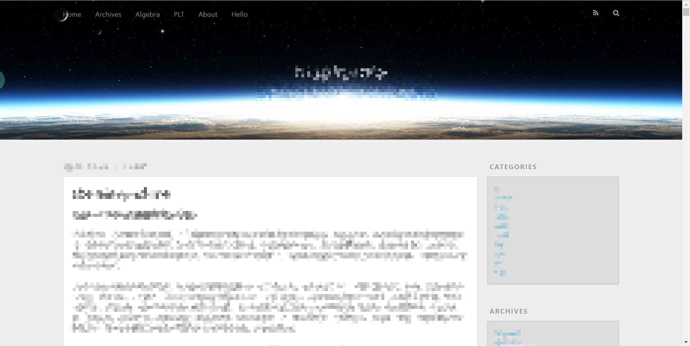
运行上述命令后，访问 http://localhost:4000 查看效果。
如果不喜欢 4000 这个端口，可以使用命令 hexo server -p 1314 来改变端口为 1314 。
至此，安装 Hexo 完成。
# Hexo 配置
若运行以下命令，可以新建文章。
hexo new "your title" |
打开 博客根目录/source/_posts 目录，可以看见命令生成的 your-title.md 文件
随后就可以编写博客。
但，工欲善其事，必先利其器。正式写博客之前，需要对框架做一些配置，使其支持图片插入，Latex 公式显示以及标题自动翻译。
# 图片显示
参考文档：使用 hexo 新建、编辑并预览文章 - 知乎 (zhihu.com)
Hexo 插入图片，需要指定资源文件夹，步骤如下
在博客根目录打开
_config.yml文件做如下修改：post_asset_folder: true
使用 hexo 新建文章，此时会创建同名文件夹。
使用
typora编辑器，编写文档。调整Typora编辑器的默认图片路径。然后插入图片，就会自动添加到上述的同名文件夹中。
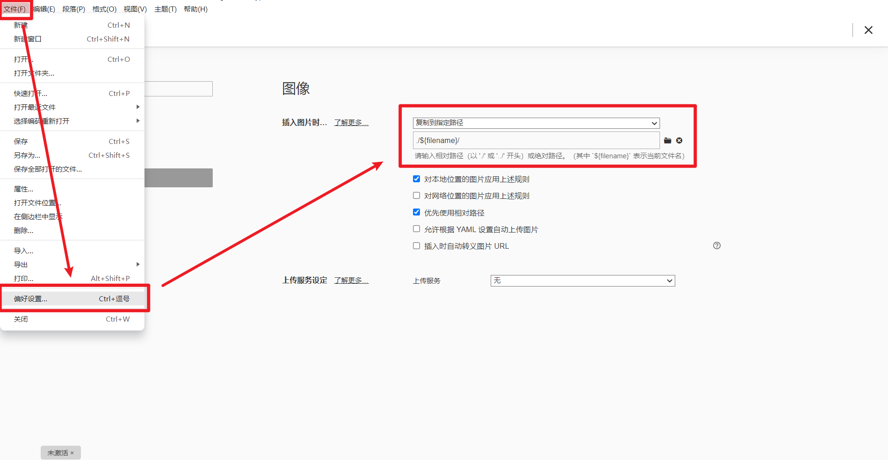
安装插件
hexo-asset-imageh npm install hexo-asset-image --save
运行命令，部署博客，查看效果。发现图片已经能够正常显示。
# Latex 数学公式显示
参考文档：hexo-theme-pure #数学公式 (github.com)
变换默认 Hexo 的 Markdown 渲染引擎
h npm un hexo-renderer-marked --savenpm i hexo-renderer-markdown-it-plus --save修改 Hexo 项目根目录下的配置文件
_config.ymlmarkdown_it_plus:
highlight: true
html: true
xhtmlOut: true
breaks: true
langPrefix:
linkify: true
typographer:
quotes: “”‘’
plugins:
- plugin:
name: markdown-it-katex
enable: true
- plugin:
name: markdown-it-mark
enable: false
然后依次运行
hexo clean和hexo g -d命令，如果报错说，不存在依赖markdown-it-katex则还需另外安装h npm i markdown-it-katex --save在
Hexo模板中启用mathjax渲染从 Hexo 项目根目录，进入
scaffolds文件夹，修改post.md模板，修改以下内容title: 用Hexo搭建个人博客（使用Pure主题）并托管到Github Page
date: 1656070049000
mathjax: true # 此处是添加部分
tags:
在博客中，添加 Latex 公式，编译部署。Latex 公式能够正常显示。
# 安装配置 hexo-neat 插件
参考文档：hexo-theme-pure #hexo-neat (github.com)
自动压缩 html，css，js 等代码，减小生成文件的体积。
npm install hexo-neat --save |
然后在 Hexo 配置文件 ./_config.yml 中添加以下代码
# hexo-neat | |
neat_enable: true | |
neat_html: | |
enable: true | |
exclude: | |
neat_css: | |
enable: true | |
exclude: | |
- '*.min.css' | |
neat_js: | |
enable: true | |
mangle: true | |
output: | |
compress: | |
exclude: | |
- '*.min.js' |
# 404 错误的排除：设置标题自动翻译
hexo 文件标题如果含有中文字符，可能会产生 404 错误。特别是如果要部署到 Github 等平台，必须要配置这个标题自动翻译。
推荐使用
hexo-translate-title插件。参考文档：
Hexo，添加标题翻译插件 - 简书 (jianshu.com)
cometlj/hexo-translate-title: 使用 Google 翻译，百度翻译和有道翻译将 Hexo 文章中的汉字标题转成英文标题 (github.com)
使用
npm工具，安装hexo-translate-title插件npm install hexo-translate-title --save
配置 Hexo 博客。在博客项目根目录下的配置文件
_config.yml中，添加下述字段。l translate_title:
translate_way: baidu_with_appid # google,youdao,baidu_with_appid,baidu_no_appid
# youdao_api_key: '' # Your youdao_api_key# youdao_keyfrom: xxxx-blog # Your youdao_keyfromis_need_proxy: false # true | false
# proxy_url: http://localhost:50018 # Your proxy_urlbaidu_appid: '' # Your baidu_appid
baidu_appkey: '' # Your baidu_appkey
rewrite: false # is rewrite true | false
由于 google 翻译可能受到影响。因此，若使用 google 翻译，可能需要使用本地代理。
baidu_no_appid不起作用了，会有报错。所以只能选择
youdao或baidu_with_appid。对应的appid和key需要到对应官网去申请文本翻译_机器翻译_在线翻译 - 有道智云 AI 开放平台 (youdao.com) ， 百度翻译开放平台 (baidu.com)
配置好翻译接口后，运行
hexo clean命令，再运行hexo g命令。翻译生效。此时，可以运行hexo s命令，本地启动博客。博客链接已经替换成了翻译生成的英文标题。
Hexo 博客的基础配置已经全部完成。
# 博客发文
前面说到，运行 hexo new "your title" 命令，可以新建博客文章。
在 博客根目录/source/_posts 目录，编辑生成的 your-title.md 文件，保存后，依次运行 hexo clean ， hexo g 和 hexo s ，即可在本地启动博客。
为更方便发文，首先修改模板：从 Hexo 项目根目录，进入 scaffolds 文件夹，修改 post.md 模板为：
title: 用Hexo搭建个人博客（使用Pure主题）并托管到Github Page | |
date: 1656070049000 | |
mathjax: true | |
categories: | |
tags: |
** 随后开始新建文章：** 我使用 hexo new "testblog" 命令，新建了博客 testblog ，此时，文件夹 博客根目录/source/_posts 中自动生成了以下两个文件
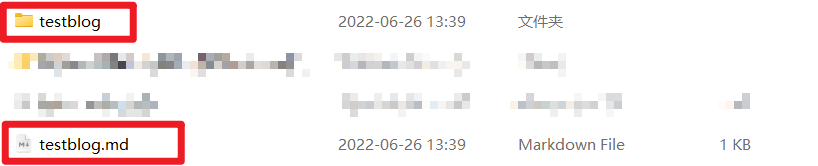
打开 testblog.md 文件后，框架为我们自动生成了以下内容。
title: testblog | |
mathjax: true | |
translate_title: testblog | |
date: 2022-06-26 13:39:42 | |
categories: | |
tags: |
其中
translate_title是上述hexo-translate-title插件生成的。其余字段是
post.md模板生成的。
编辑好博客内容后。我们还可以对文章增加标签和目录。以本文为例。
title: 用 Hexo 搭建个人博客（使用 Pure 主题）并托管到 Github Page | |
mathjax: true | |
translate_title: set-up-a-personal-blog-with-hexo-(using-the-pure-theme)-and-host-it-to-github-page | |
date: 2022-06-24 19:27:29 | |
categories: | |
- Hexo | |
tags: | |
- 教程 |
本文就会自动出现分类和标签，并展示。
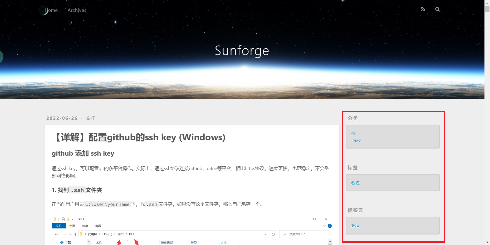
# 部署 Hexo 到 Github Page 托管
# Github 访问加速
如果不会魔法上网操作，可以使用 Github 大神 dotnetcore 开发的 FastGithub 客户端。
# 在 Github 上构建仓库
新建一个仓库，命名为： 你的Github用户名.github.io 【必须这么命名，这个仓库会被识别为特殊仓库】
Github用户名大小写最好区分【一些教程中统一用的小写，我没试过】我的用户名是
BEATING-HEART，所以，我的仓库命名为BEATING-HEART.github.io
# 配置 Github SSH 登录
见本站另一博客。【详解】配置 github 的 ssh key (Windows) | Sunforge's Blog
# 调整 Hexo 配置
打开 Hexo 项目文件夹目录下的 _config.yml 文件，拉到最底部，修改 deploy 字段为：
# Deployment | |
## Docs: https://hexo.io/docs/one-command-deployment | |
deploy: | |
type: git | |
repo: git@github.com:你的Github用户名/你的Github用户名.github.io.git | |
branch: main |
本人的用户名是
BEATING-HEART，所以，本人在上述的 repo 字段中填写的是
git@github.com:BEATING-HEART/BEATING-HEART.github.io.git注意，这里必须配置 SSH key 后，使用 Git 地址，否则可能需要登录验证。
# 部署 Hexo
在 Hexo 目录中，执行以下命令：
npm install hexo-deployer-git --save #安装部署工具 | |
hexo clean # 清除缓存 | |
hexo g # 生成静态文件 也作 hexo generate | |
hexo d # 部署 Hexo 到 Github 也作 hexo deploy |
运行结束后，在浏览器中输入 http://你的Github用户名.github.io 就可以访问博客。
比如访问 https://beating-heart.github.io/ 就可以到我的博客。
但由于我配置了域名，这个连接会被重定向到 https://blog.sunforge.cn/
# 绑定域名（非必选）
购买域名后，打开域名控制台，添加解析记录【这里以阿里云域名为例】
选择记录类型为
CNAME添加主机记录（域名二级地址）这里我分配了
blog这个地址。这样一来，访问我的博客就是用
blog.sunforge.cn这个域名记录值就是上面设置的，你的 github 的域名（我的域名是
beating-heart.github.io）TTL 值和解析路线值，保持默认即可
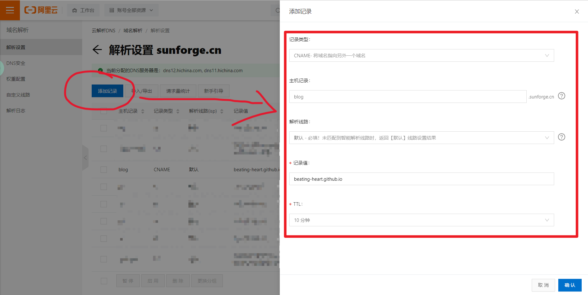
在 Github 网站上，配置博客域名
首先进入博客配置的仓库
进入设置界面，转到 pages 选项卡
添加自定义域名为你自己的域名
和上一步添加的解析记录保持一致，例如我的域名是
blog.sunforge.cn勾选 HTTPS 选项，Github 可以自动给你的域名配置 SSH 证书
白嫖使人快乐
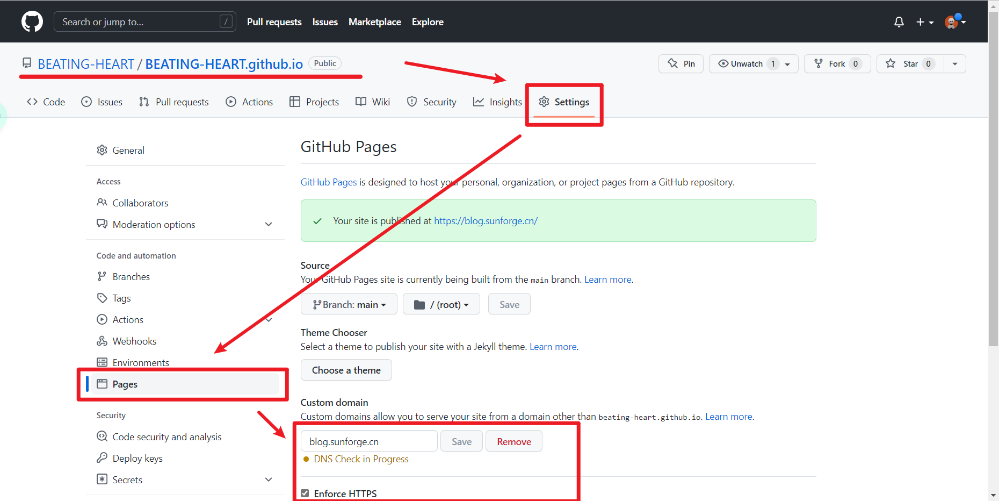
访问博客，查看效果。 （此时的主题是默认的 landscape 主题）
如果你没有域名，那么必须遵从上面的步骤配置，采用规定的仓库命名方式。
github会为你统一分配域名为https://你的github用户名.github.io/如果你有域名，则可以不遵守上面的配置，意命名你的
github仓库。只需要在上述页面中，绑定自己的域名，即可将页面部署到自己的域名下。
# 设置 Hexo 主题（非必须）
Hexo 默认主题可以满足大多使用需要，可以不更换主题。
# Hexo 主题的挑选
可访问 Themes | Hexo 挑选心仪主题，也可查看 CSDN、博客园平台发布的经验贴。
# 配置 Pure 主题
Pure 主题参考效果：Cofess - Web Developer & Designer
参考文档：cofess/hexo-theme-pure 中文说明文档 (github.com) Hexo 主题 pure 使用指南 | 非典型性程序员 (plcent.com)
1. 启用 pure 主题
修改 Hexo 项目根目录下的配置文件 _config.yml
language: zh-CN # 设置主题为中文版，若使用英文版则不修改 | |
theme: pure # 修改 hexo 主题 |
随后复制 博客根目录/themes/pure/_source/ 目录下的所有内容到 博客根目录/source/ 目录下，使用默认的菜单 categories (分类)、 tags (标签)、 repository (项目)、 books (书单)、 links (友链)、 about (关于) 页面。
并且将主题配置文件 博客根目录/themes/pure/_config.yml ，移动到并重命名为 博客根目录/_config.pure.yml
每个主题，都有一个主题配置文件，存放在
博客根目录/themes/pure/_config.yml中。Hexo 默认会读取这个文件的内容。为了方便修改，我们将博客配置文件移动到并重命名为
博客根目录/_config.主题名.yml。此时 Hexo 会读取根目录下的这个新配置文件的内容。根据官方文档 配置 | Hexo，如果有两个配置文件，配置内容会 “互通有无”，所以，应当集中在同一个配置文件中修改。
效果如图：
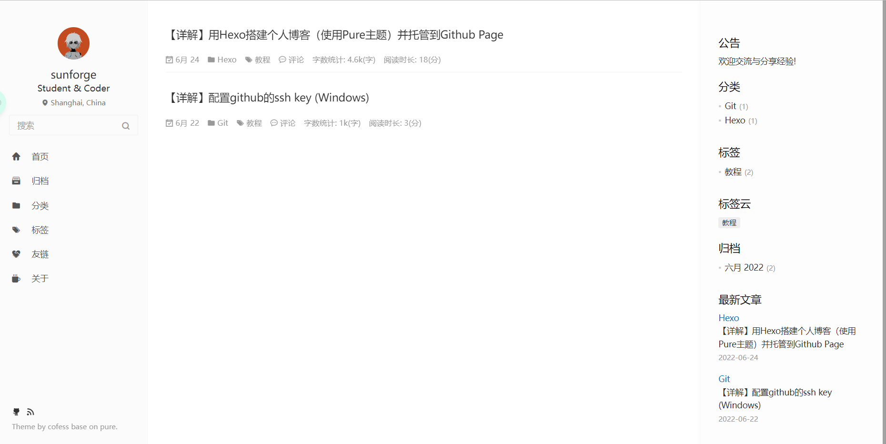
2. 开启字数及阅读时间统计
主题内置了该功能，使用前需要先安装插件:
npm i -S hexo-wordcount |
npm 命令中
install可以缩写为i，--save可以缩写成为-S
在主题配置文件中（根目录下的主题配置文件 _config.pure.yml ）, 开启设置即可:
# wordcount | |
postCount: | |
enable: true ## 从 false 修改成 true | |
wordcount: true # 文章字数统计 | |
min2read: true # 阅读时长预计 |
3. 开启站内搜索功能
主题中已经内置。首先需要安装 hexo-generator-json-content 插件。
npm install hexo-generator-json-content --save |
然后在主题配置文件 博客根目录/_config.pure.yml 中修改添加如下属性。
search: | |
insight: true # you need to install `hexo-generator-json-content` before using Insight Search | |
baidu: false # you need to disable other search engines to use Baidu search |
即可使用站内搜索功能
4. 支持 rss 订阅
主题中已经内置好了，只需要安装插件即可。
npm install hexo-generator-feed --save |
5. 生成站点地图
站点地图描述了网页的架构，生成站点地图可以方便搜索引擎收录你的博客。
npm install hexo-generator-sitemap --save | |
npm install hexo-generator-baidu-sitemap --save |
更改完成后，每次进行打包的时候，会自动在 public 文件夹下生成 sitemap.xml 和 baidusitemap.xml 分别用于 Google 和百度。
将页面提交到服务器后，通过 域名/sitemap.xml 或者 域名/baidusitemap.xml 可以进行访问 sitemap 。
最后到 Google 或百度站长工具进行提交 sitemap 就可以主动使搜索引擎收录页面。
6. 配置主题颜色
主题定制了五套颜色，可以在主题配置文件 _config.pure.yml 中更改。
默认白，黑:theme-black，蓝:theme-blue，绿:theme-green，紫:theme-purple
# config | |
config: | |
skin: # 主题颜色 theme-black theme-blue theme-green theme-purple |
7. 配置导航菜单
# 导航菜单 | |
menu: | |
Home: . | |
Archives: archives # 归档 | |
Categories: categories # 分类 | |
Tags: tags # 标签 | |
# Repository: repository # github repositories | |
# Books: books # 书单 | |
Links: links # 友链 | |
About: about # 关于 | |
# 导航菜单图标（font awesome） | |
menu_icons: | |
enable: true # 是否启用菜单图标 | |
home: icon-home-fill | |
archives: icon-archives-fill | |
categories: icon-folder | |
tags: icon-tags | |
# repository: icon-project | |
# books: icon-book-fill | |
links: icon-friendship | |
about: icon-cup-fill |
我将书单和 github 仓库关闭了，所以不配置相关内容。
8. 设置个人信息
头像在 themes\pure\source\images 目录下替换图片即可，捐献的二维码同理。个人信息大部分都在 主题配置文件 中设置
9. 设置分享
支持 weibo,qq,qzone,wechat,tencent,douban,diandian,facebook,twitter,google,linkedin
# Share | |
# weibo,qq,qzone,wechat,tencent,douban,diandian,facebook,twitter,google,linkedin | |
share: | |
enable: true # 是否启用分享 | |
sites: weibo,qq,wechat,facebook,twitter # PC 端显示的分享图标 | |
mobile_sites: weibo,qq,qzone # 移动端显示的分享图标 |
10. 侧边栏设置
在文章头部自动生成的配置栏中，添加字段如下
title: testblog | |
mathjax: true | |
translate_title: testblog | |
date: 2022-06-26 13:39:42 | |
toc: true ### toc: table of content 目录 | |
categories: | |
tags: |
此时，文章右侧显示出目录。
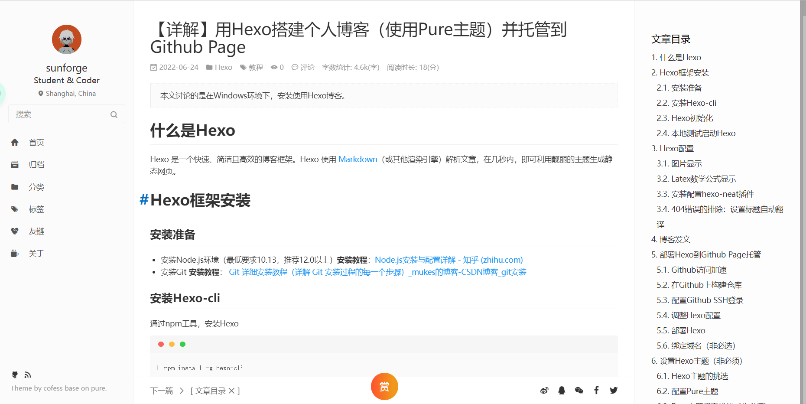
如果在增加配置 sidebar: none ，则右侧目录组件（或原组件）就不会显示。
但这个目录功能有一个 bug，如果是手机访问的话，这个目录会浮动在内容上面，遮挡内容。
改天有时间了尝试着修复下。
# Pure 主题博客优化（非必须）
博客如果只作笔记，以记录作用为主，那么可以不配置下面的内容。
如果要作为个人主页来展示，那么，建议继续配置以下内容。
1. 文章阅读量统计
主题内置了 不蒜子 统计和 基于 leancloud 的统计
开启不蒜子统计：
在主题配置文件中（根目录下的主题配置文件
_config.pure.yml）, 开启设置即可：# PVpv: # 浏览量统计
busuanzi:
enable: true # 不蒜子统计，一般使用不蒜子统计，使用 true 开启
经过验证，发现基于 leancloud 的统计不生效，不知原因，实现等效的方法就是:
评论框使用
valine评论框 (主题已经内置), 同时开启visitor: true配置项即可。
2. 配置评论功能
参考文档：快速开始 | Valine 一款快速、简洁且高效的无后端评论系统。
Valine 是一个无后端的评论框工具，其依赖于 Leancloud 开发，所以使用前需要先注册 Leancloud 账号
首先，在控制台界面，创建应用。成功创建后，效果如图。
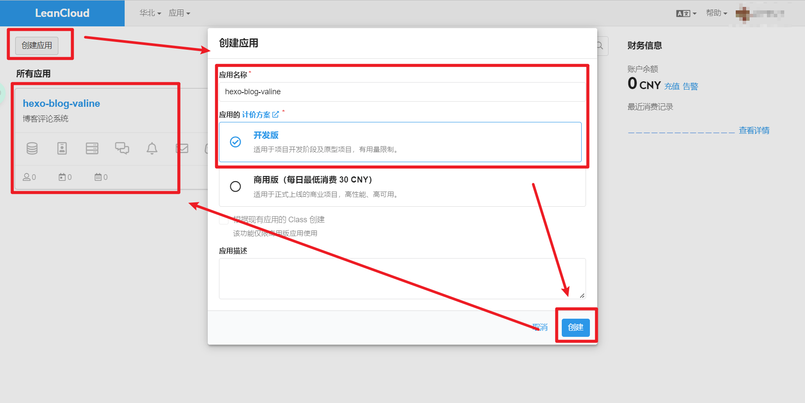
点击进入应用内，查看自己的 appid 和 appkey ，并复制。
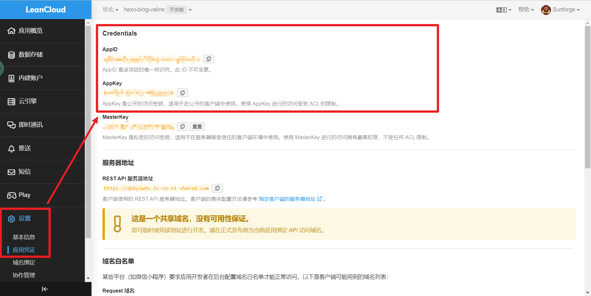
在主题配置文件中（根目录下的主题配置文件 _config.pure.yml ）修改字段并添加内容：
comment: | |
type: valine # 启用哪种评论系统 | |
valine: # Valine 官方地址: https://valine.js.org | |
appid: # 你的 leancloud 应用 appid | |
appkey: # 你的 leancloud 应用 appkey | |
notify: true # 是否开始评论邮件提醒，教程: https://github.com/xCss/Valine/wiki | |
verify: false # 是否开始验证码功能，开始邮件提醒会自动开启验证码功能 | |
placeholder: 说点什么... # 输入框默认内容 | |
avatar: mp # 头像展示方式，具体设置项教程: https://valine.js.org/configuration.html#avatar | |
meta: nick,mail,link # 自定义评论信息 | |
pageSize: 10 # 评论列表分页 | |
lang: zh-cn, # 多语言支持 zh-cn | en | |
visitor: true # 文章阅读量统计: https://valine.js.org/visitor.html | |
highlight: true # 代码高亮 | |
recordIP: true # 记录评论者的 IP |
如果设置了不蒜子统计，那么
visitor字段就填false，否则会重复统计浏览量。如果没有设置不蒜子统计，那么
visitor可以设置true
评论的管理：在 Leancloud 中创建一个 Comment Class ，其余配置不变。
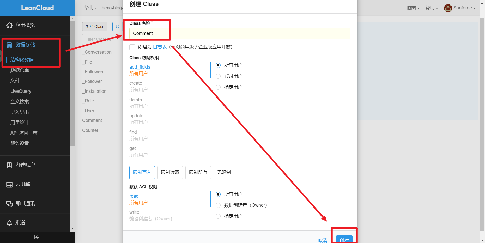
使用博客系统发表评论时，即会同步显示在 Comment 对象中。如果开启了 visitor: true 功能，那么还会自动创建 Counter Class ，用以记录访问人数。
3. 评论头像的修改：头像配置 | Valine 一款快速、简洁且高效的无后端评论系统。
Valine 目前使用的是 Gravatar 作为评论列表头像。需要自行登录或注册 Gravatar，然后修改自己的头像。评论的时候，留下在 Gravatar 注册时所使用的邮箱即可。
非自定义头像有 7 中默认值可以选择。（上述配置中使用的 mp，因此，如果不添加邮箱，则会展示灰白头像）
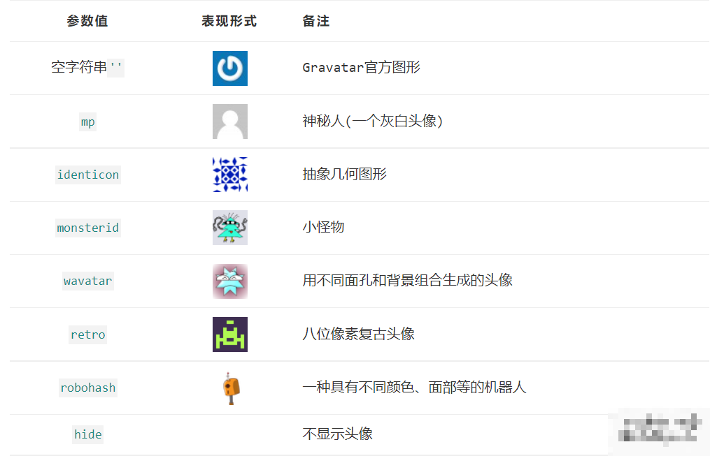
4. 向百度爬虫提交链接
参考文档：Hexo 插件之百度主动提交链接 | 王辉的博客 (hui-wang.info)
请注意， 本插件的配置文件中包含秘钥， 请妥善管理好博客源码【源码可以保存在本地，如要推上 Github，一定要推到私有仓库】
首先，注册百度站长工具，然后在工具 -> 网页抓取 -> 链接提交里找到你的密匙。
随后，安装 hexo-baidu-url-submit 插件
npm install hexo-baidu-url-submit --save |
其次，在根目录下，把以下内容配置到 _config.yml 文件中:
baidu_url_submit: | |
count: 5 ## 提交最新的 5 个链接 (一次最多新增 5 篇文章，否则向百度提交链接就会漏掉一些) | |
host: blog.sunforge.cn ## 在百度站长平台中注册的域名 | |
token: your_token ## 请注意这是您的秘钥， 所以请不要把博客源代码发布在公众仓库里！ | |
path: baidu_urls.txt ## 文本文档的地址， 新链接会保存在此文本文档里 |
再次，记得查看博客根目录下 _config.yml 文件中 url 的值， 必须包含是百度站长平台注册的域名， 比如:
# URL | |
url: http://blog.sunforge.cn | |
root: / | |
permalink: :year/:month/:day/:title/ |
最后，加入新的 deployer:
deploy: | |
- # 原来的内容 | |
- type: baidu_url_submitter ## 这是新加的 |
执行 hexo deploy 的时候，新的链接就会被推送了。
5. 引入 fancybox 图床实现图片点击放大
主题已经内置 FancyBox 功能。只需在主题配置文件 _config.pure.yml 中开启即可。
# Fancybox | |
fancybox: true |
至此，hexo 博客的配置教程告一段落。祝顺利。